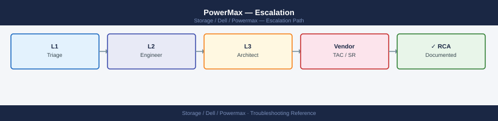
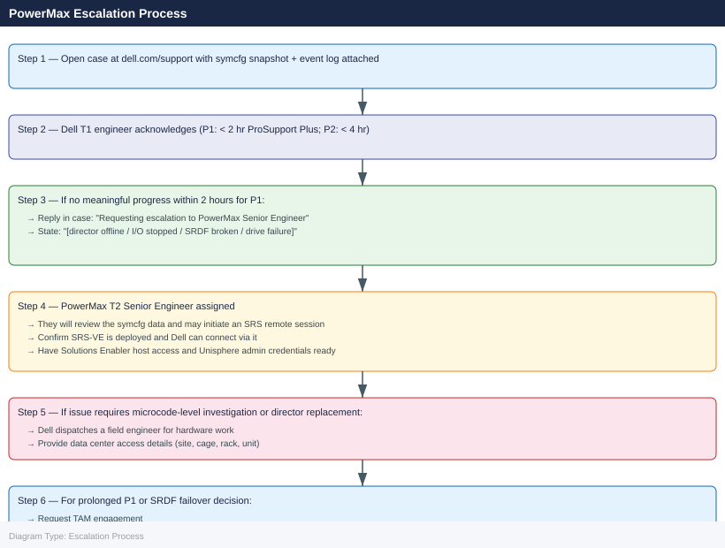

PowerMax — Escalation¶

Before you begin¶
- Access required: Solutions Enabler (symcli) on a host connected to the PowerMax; Unisphere access (admin credentials); Dell support account at dell.com/support linked to the array serial number; SRS-VE deployed and registered for remote Dell access
- SupportAssist auto-cases: PowerMax monitors itself via SupportAssist (Unisphere → Connectivity → SupportAssist) and can auto-open Dell cases for hardware faults. Check dell.com/support → My Cases before creating a duplicate
- Do NOT failover SRDF (symrdf failover or symrdf establish in the wrong direction) without Dell direction — an incorrect failover breaks the replication relationship and may require a full resync, causing extended RPO exposure
- Do NOT use --force flags on symcli commands without Dell direction — force flags on replication or storage group commands bypass safety checks and can cause data corruption
Pre-Escalation Self-Check¶
Run these before opening the case.
| Check | Command | Expected result |
|---|---|---|
| Array serial (SID) | symcfg list |
Note the 12-digit Symmetrix ID |
| Array health | symcfg -sid <SID> show |
No directors in OFFLINE state |
| Director status | symcfg -sid <SID> list -dir all |
All directors Online |
| Drive health | sympd list -sid <SID> |
No drives in FAILED or DEAD state |
| SRDF state | symdf list -sid <SID> |
All groups in SYNCHRONIZED or CONSISTENT state |
| Active alerts | Unisphere → Alerts | No critical (red) alerts |
| SupportAssist | Unisphere → Connectivity → SupportAssist | Enabled; last call-home successful |
| Unisphere accessibility | Browse to https://<unisphere-ip>:8443/univmax |
Login page loads |
Step-by-Step Data Collection¶
1. Get the array serial number and microcode version¶
# On a host with Solutions Enabler installed (symcli in PATH)
# List all registered arrays — note the 12-digit Symmetrix ID (SID)
symcfg list
# Full array health and microcode version
symcfg -sid <SID> show > /tmp/pmx-health-$(date +%Y%m%d%H%M).txt
# Solutions Enabler version
symcli -version >> /tmp/pmx-health-$(date +%Y%m%d%H%M).txt
Symmetrix ID: 000296900001
Symmetrix ID: 000296900002
Symmetrix ID: 000296900003
Solutions Enabler Version: V9.2.1.0
(no output — command completes silently)
Solutions Enabler Version: V9.2.1.0
Solutions Enabler Release: 9.2.1
Solutions Enabler Build: 123.456.789
Common errors
symcfg: Command not found — Verify Solutions Enabler is installed and /opt/emc/SYMCLI/bin is in your PATH, or source the installation profile.
SYMAPI_DB_CONNECT_ERROR: Cannot connect to the Symmetrix — Ensure the Symmetrix daemon (symapi) is running on the host with sudo /opt/emc/SYMAPI/bin/symapi_control start and network connectivity to the array is available.
Permission denied — Run the command with sudo or ensure your user is in the symcli or root group for Solutions Enabler access.
2. Capture director and port status¶
# All directors with their health state
symcfg -sid <SID> list -dir all > /tmp/pmx-directors-$(date +%Y%m%d).txt
# Front-end director port status (host-facing)
symcfg -sid <SID> list -fa all >> /tmp/pmx-directors-$(date +%Y%m%d).txt
# Back-end director port status (drive-facing)
symcfg -sid <SID> list -da all >> /tmp/pmx-directors-$(date +%Y%m%d).txt
Director Information for Array 000123456789
================================================================================
Director Health Summary
Director ID Type Status Cache Temp Power Fan
----------- ----------- --------- ---------- ------- -------- --------
FA-1D Front-End Online OK OK OK OK
FA-2D Front-End Online OK OK OK OK
FA-3D Front-End Online OK OK OK OK
DA-1D Back-End Online OK OK OK OK
DA-2D Back-End Online OK OK OK OK
...
Front-End Director Port Status
================================================================================
Director Port Status Link Speed Logins MB/s
FA-1D 0 Online Yes 16Gb 847 1245.3
FA-1D 1 Online Yes 16Gb 892 1389.7
FA-2D 0 Online Yes 16Gb 756 998.4
FA-2D 1 Online Yes 16Gb 801 1156.2
...
Back-End Director Port Status
================================================================================
Director Port Status Link Speed Logins MB/s
DA-1D 0 Online Yes 12Gb 1024 2847.5
DA-1D 1 Online Yes 12Gb 1031 2923.1
DA-2D 0 Online Yes 12Gb 998 2756.3
DA-2D 1 Online Yes 12Gb 1009 2891.4
...
Common errors
SYMAPI Error: Cannot connect to the Symmetrix array <SID> — Verify the SID is correct and the Symmetrix Management Console (SMC) service is running on the management station.
Permission denied — Run the command with appropriate privileges (use sudo or ensure your user is in the symuser group).
symcfg: command not found — Install the EMC Solutions Enabler package or add its bin directory to your PATH environment variable.
3. Capture drive health¶
# All physical drives and their state
sympd list -sid <SID> > /tmp/pmx-drives-$(date +%Y%m%d).txt
# Drives in FAILED or DEAD state only
sympd list -sid <SID> | grep -E "FAILED|DEAD|REPLACING" >> /tmp/pmx-drives-$(date +%Y%m%d).txt
Symmetrix ID: 000297900001
Devic Port Slot Tray Dir Phys
e ID Num Num Num Pos State
--------- --- ---- --- --- ------
0 0 0 0 0 Ready
1 0 0 0 1 Ready
2 0 0 0 2 Ready
3 0 0 0 3 Ready
4 0 0 0 4 Ready
5 0 0 0 5 FAILED
6 0 0 0 6 Ready
7 0 0 0 7 DEAD
...
FAILED|DEAD|REPLACING state drives appended to /tmp/pmx-drives-20240115.txt
Common errors
sympd: Command not found — Ensure the Symmetrix CLI tools are installed and the PATH includes the bin directory (typically /opt/emc/SYMCLI/bin).
Permission denied: /tmp/pmx-drives-20240115.txt — Check that the user running the command has write permissions to /tmp or redirect output to a directory with appropriate permissions.
Symmetrix ID: <SID> -- Could not be found — Verify the SID value is correct and the array is reachable via the Symmetrix management network.
4. Capture SRDF replication state (if SRDF is in use)¶
# All SRDF groups and their state
symdf list -sid <SID> > /tmp/pmx-srdf-$(date +%Y%m%d).txt
# Detailed state of a specific SRDF group
symrdf -sid <SID> -rdfg <rdfg-number> query >> /tmp/pmx-srdf-$(date +%Y%m%d).txt
# RDF director status
symcfg -sid <SID> list -ra all >> /tmp/pmx-srdf-$(date +%Y%m%d).txt
Symmetrix ID: 000123456789ABC
SRDF/Metro Groups
-----------------
Group # Type Local Remote State Pair State Link State
1 Metro R1 R2 Ready Synchronized OK
2 Metro R1 R2 Ready Synchronized OK
3 Metro R1 R2 Ready Synchronized OK
RDF Director Status Report
Director Port Status Link State Frames In Frames Out
RF-1a 0 Online OK 1245678 1245612
RF-1b 0 Online OK 1245689 1245645
RF-2a 0 Online OK 1245701 1245698
RF-2b 0 Online OK 1245712 1245709
...
Report written to: /tmp/pmx-srdf-20240115.txt
Common errors
symdf: Command not found — Ensure Symmetrix CLI tools are installed and the $PATH includes the Symmetrix bin directory (typically /opt/emc/SYMCLI/bin).
Symmetrix ID <SID> does not exist in the configuration — Verify the SID value matches an array in your Symmetrix configuration file (/var/symapi/config/netcnx.cfg).
Permission denied: /tmp/pmx-srdf-20240115.txt — Run the commands with appropriate permissions or redirect output to a directory where the user has write access.
5. Collect the event log¶
# Last 500 array events (faults, alerts, configuration changes)
symevent -sid <SID> list -last 500 > /tmp/pmx-events-$(date +%Y%m%d).txt
# Filter for alerts and faults
symevent -sid <SID> list -last 500 | grep -iE "FAULT|ALERT|FAILED|CRITICAL" >> /tmp/pmx-events-$(date +%Y%m%d).txt
Event ID,Timestamp,Severity,Message,Component
12847,2024-01-15 14:32:18,CRITICAL,Director 4a link down,FA-4a
12846,2024-01-15 14:31:52,ALERT,Cache hit ratio below threshold,Cache
12845,2024-01-15 14:15:03,FAULT,SSD 45 predictive failure,DAE-3
12844,2024-01-15 13:47:21,ALERT,Replication lag detected,SRDF
12843,2024-01-15 13:22:09,CRITICAL,Power supply 2 failed,PSU-2
12842,2024-01-15 12:58:44,ALERT,Temperature threshold exceeded,Cooling
12841,2024-01-15 11:19:37,FAULT,Port 3e offline,FA-3e
Common errors
symevent: command not found — Install Unisphere CLI tools or ensure the Symmetrix CLI package is in your PATH.
Error: Invalid SID <SID> — Replace <SID> with the actual 6-digit array serial number (e.g., 000123456789).
Permission denied — Run the command with appropriate user privileges or use sudo if required by your environment.
6. Write the timeline¶
Array: PowerMax 8500 SID: 000XXXXXXXXXX
PowerMaxOS: 10.1.0.2
Solutions Enabler: 10.1.0.18
Unisphere: 10.1.0.2
Hosts connected: 24 (FC multipath via 4 FE directors)
SRDF: 3 RDF groups to DR site (async, RPO 30s)
Issue first observed: 2026-06-15 08:00 UTC
Last confirmed healthy: 2026-06-15 06:00 UTC
Changes in 24h before the issue:
- 06:00: Planned drive capacity expansion: 4 x 7.68 TB NVMe drives added to DA-2C
- 08:00: Unisphere alert: "Director FA-3D OFFLINE"
- 08:05: 6 host paths to FA-3D ports went dead; multipath reduced from 4 to 2 paths per LUN
SupportAssist: Auto-case created (Dell case XXXXXXXX) at 08:01
Steps already taken:
- Did NOT failover SRDF
- Did NOT modify storage groups or masking views
- symcfg -sid list -dir all: FA-3D shows OFFLINE; all other directors Online
Blast radius: 6 hosts have reduced path count; I/O is continuing via remaining paths; no outage yet
How to Open the Case on dell.com/support¶
-
Go to dell.com/support and sign in with your Dell account.
-
Click My Cases → Create New Case.
-
Under Product, enter the array serial number. Dell identifies the PowerMax by the 12-digit Symmetrix ID.
-
Under Severity, select:
- Severity 1 — Production Down: I/O has stopped to production hosts; a director is offline and no redundant path exists; SRDF has broken and DR site is out of sync with no valid recovery point; data loss is imminent; no workaround
- Severity 2 — Degraded: A director is offline but multipath is maintaining I/O via remaining paths; SRDF is suspended but data is consistent; drive rebuild is in progress after a failure; workaround is partial
- Severity 3 — Non-Critical: A drive is in a REPLACING state but RAID is protecting data; a specific Unisphere feature is broken; workaround exists
-
Severity 4 — General: How-to, capacity planning, upgrade planning, SRDF configuration review
-
In the Summary field: symptom + scope. Example:
PowerMax 8500 SID 000XXXXXXXXXX — FA-3D director offline since 08:00 UTC, 6 hosts reduced to 2 paths per LUN. -
In the Description field, paste:
- Array SID and PowerMaxOS version from Step 1
- Director status output from Step 2
- SRDF state from Step 4 (if relevant)
- The last 20 lines of the event log from Step 5
- The timeline from Step 6
-
Any SupportAssist auto-case number if one was created
-
Under Attachments, upload:
- The
pmx-health-*.txtfile from Step 1 - The
pmx-directors-*.txtfile from Step 2 - The
pmx-drives-*.txtfile from Step 3 -
The
pmx-events-*.txtfile from Step 5 -
Click Submit. You receive a case number immediately.
-
Severity 1 only: call Dell support after submission:
- North America: +1 800 945 3355 (24×7 for production-down)
- Reference the case number and state "Severity 1 — PowerMax director offline, host I/O at risk" at the start of the call.
Escalation Path¶

What NOT to Do¶
| Do NOT do this | Why | What to do instead |
|---|---|---|
| Failover SRDF without Dell approval | An incorrect failover breaks the replication relationship; resync from DR to primary can take hours and extends RPO exposure | Let Dell assess the SRDF state and confirm the failover direction before any symrdf failover command |
| Modify storage groups or masking views during the incident | Changes to host access during an I/O issue can cause hosts to lose access to their remaining paths | Freeze all storage group and masking view changes until Dell confirms it is safe to proceed |
| Use symcli --force flags without Dell direction | Force flags bypass safety checks and can cause data corruption or invalid SRDF state changes | Only use --force when Dell explicitly instructs and provides the exact command |
| Start a microcode upgrade during an active incident | Microcode upgrades on an array with a faulted director can make the array state unrecoverable | Wait until the director fault is resolved and the array is fully healthy before any upgrade |
| Disable SupportAssist during the case | SupportAssist provides Dell with real-time array telemetry that speeds diagnosis | Keep SupportAssist enabled; the auto-collected data is used by the T2 engineer |
| Remove or replace drives without Dell confirmation | Removing the wrong drive in a RAID-protected group can cause a second fault and potential data loss | Dell will identify the correct replacement drive and dispatch it; only replace after Dell confirms |
Useful Commands for Case Updates¶
# Run on a host with Solutions Enabler (symcli) — paste into every case update
# Array health (quick summary)
symcfg -sid <SID> show | grep -E "Microcode|Status|Cache"
# Director states (look for OFFLINE)
symcfg -sid <SID> list -dir all | grep -E "ONLINE|OFFLINE"
# Drive states (look for FAILED/DEAD)
sympd list -sid <SID> | grep -v "Ready" | head -30
# SRDF state (look for Suspended or Invalid)
symdf list -sid <SID>
# Recent events (last 20)
symevent -sid <SID> list -last 20
Microcode Version: T10.1.0.0.4.030
Status: Normal
Cache: 4096 MB (Write-back enabled)
Director 0_0: ONLINE
Director 0_1: ONLINE
Director 1_0: ONLINE
Director 1_1: ONLINE
Director 2_0: ONLINE
Director 2_1: ONLINE
Disk 0_0_0: Failed
Disk 0_1_5: Dead
Disk 1_2_3: Rebuilding
R2 (Local): Synchronized
R1 (Remote): Synchronized
2024-01-15 14:32:18 Array 000123456789 Director 0_0 Link Down
2024-01-15 14:28:45 Array 000123456789 Disk 0_0_0 Predictive Failure
2024-01-15 14:15:22 Array 000123456789 Cache Battery Low
2024-01-15 13:52:10 Array 000123456789 Director 1_1 Recovered
2024-01-15 13:45:33 Array 000123456789 Disk 0_1_5 Failed
Common errors
symcfg: Error: Invalid SID <SID> — Replace <SID> with the actual array serial ID (e.g., 000123456789).
symcfg: command not found — Install or source Solutions Enabler (symcli) on the host, or verify the installation path is in $PATH.
symcfg: Error: Cannot connect to array — Verify network connectivity to the array management interface and confirm the host has proper SNMP/management credentials configured.
Support SLA Reference¶
| Tier | Severity | Definition | Initial Response SLA |
|---|---|---|---|
| ProSupport Plus | P1 — Production Down | I/O stopped; director offline; SRDF broken; data at risk | < 2 hours (24×7) |
| ProSupport Plus | P2 — Degraded | Director offline with multipath protecting I/O; SRDF suspended; drive rebuilding | < 4 hours (24×7) |
| ProSupport Plus | P3 — Non-Critical | Drive in REPLACING (protected); specific feature broken; workaround exists | Next business day |
| ProSupport Plus | P4 — General | How-to, planning, SRDF configuration review | Next business day |
| ProSupport | P1 | As above | < 4 hours (24×7) |
See also¶
Verify resolution¶
- Run
symcfg -sid <SID> showand confirm no directors are in OFFLINE state - Run
symcfg -sid <SID> list -dir alland confirm all FE, BE, and RDF directors are Online - Run
sympd list -sid <SID>and confirm no drives are in FAILED or DEAD state - Run
symdf list -sid <SID>and confirm all SRDF groups are in SYNCHRONIZED or CONSISTENT state - Verify on affected hosts that all expected storage paths are active (multipath tool,
mpath, oresxcli storage nmp path list) - Confirm host I/O is healthy by checking application logs and storage performance metrics in Unisphere
- Monitor Unisphere Alerts for 15 minutes to confirm no new critical alerts appear